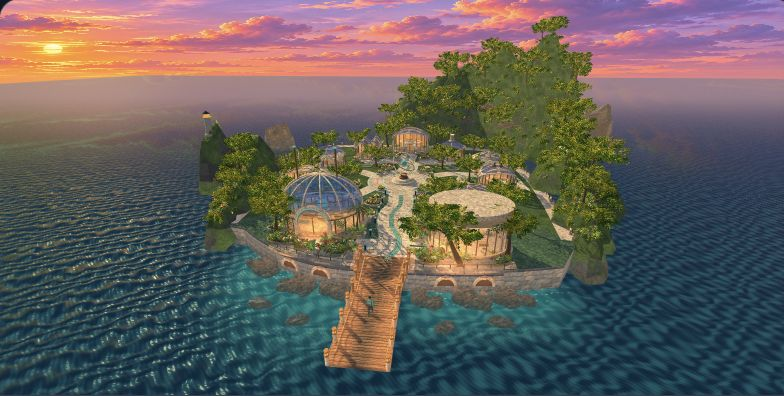
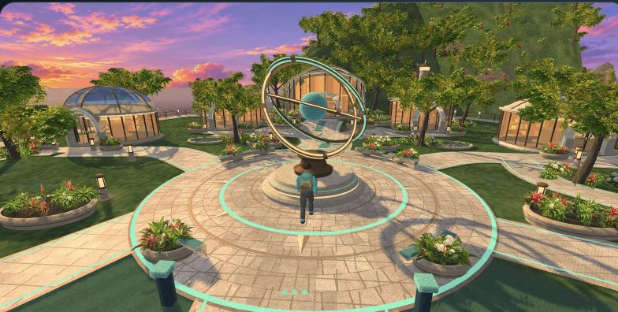

YEARS 10–12 · EMPLOYABILITY SKILLS PORTFOLIO
SkillQuest
SkillQuest is the whole learning journey. It takes place in Skillsville, where students visit dedicated Skills Labs and track key experiences in My Portfolio.
Explore the playable island
SkillQuest is a proposed Years 10–12 learning and portfolio program. Students learn what employability capabilities look like, practise them in a fictional world and use STAR to describe where they have used them in real life. Over time, they can revisit experiences and notice what they enjoy and where their interests are developing.
Each capability has a dedicated Skills Lab where students learn what the skill looks like, experiment with different approaches, develop it through practice, see their progress and draw conclusions from what they experience. My Portfolio is where students track key experiences over time, use STAR to explain what they did and connect those experiences to transferable skills. Communication Skills Lab is playable in the prototype. Critical Thinking Skills Lab is an example of a possible future destination.
This blueprint holds the evolving proposal and design concepts. The playable world is a separate companion prototype.
FIRST PLAYABLE JOURNEY
From South Dock to a real example
01 · Arrive
Choose a suit and follow the lit path north. The ring sculpture makes Discovery Plaza a meeting point students can find again.
02 · Discover and practise
Head west to the twin masts. In Communication Skills Lab, explore familiar examples or radio instructions to Kai in Relay Rescue. Feedback explains what made the message clear.
03 · Record and revisit
Use My Portfolio to describe a real situation, task, action and result. Revisit the entry in the gallery. Signal Keeper records the mission; a portfolio entry records the learner’s own example.
Studio illustration used in the playable welcome. The explorable scene models building exteriors.
SKILLSVILLE / LEARNING DESTINATIONS
The eight Skills Labs
Communication Skills Lab
Explain clearly, listen for misunderstandings and check what others heard.
Collaboration Skills Lab
Agree on roles, share information and support others to complete a task.
Initiative Skills Lab
Notice a need, decide what you can do and take responsibility for following through.
Problem-solving Skills Lab
Investigate what is happening, compare options and test a solution.
Adaptability Skills Lab
Change a plan when conditions shift and learn from the result.
Self-management Skills Lab
Plan time and effort, organise materials and check progress.
Creativity Skills Lab
Generate ideas and improve an existing approach.
Leadership Skills Lab
Help a group agree on priorities, invite input and support action.
Communication is playable in the current prototype. The other seven labs are exterior previews.
DASHBOARD CONCEPT
What a teacher would see
Cohort view
See who has practised, who has submitted an example and which submissions need feedback.
Student evidence
Read submitted STAR reflections by date and capability, then ask for clarification or a revision where needed.
Review history
See submitted versions and feedback over time. Keep game rewards and evidence review in separate fields.
Proposed concept. The current playable prototype stores reflections locally and does not have school accounts or a teacher dashboard.
TRIAL ENDORSED-PROGRAM APPLICATION
Working application outline
Purpose and outcomes
Years 10–12 learners recognise capability behaviours, practise them and use real experiences to articulate what they did and learned.
Teaching and completion
Develop a teaching sequence, trial duration and evidence criteria. Define what a complete portfolio would contain and how a reviewer would judge it.
Provider responsibilities
Define teacher support, moderation, records and evaluation. Confirm the application pathway and address overlap with existing WACE courses.
Planning outline only. Endorsement, hours and unit equivalence remain unconfirmed.
COMPANION MATERIALS
Explore the world and the design
Compare the South Dock concept with the live browser build
Playable build update. Walk from the South Dock lanterns to Discovery Plaza's bronze and mint rings. Branching stone paths lead to the Skills Lab pavilions, the coastal promenade and the planted ramp to My Portfolio. Follow the southwest path from the plaza to the twin masts of the Communication Skills Lab to try Relay Rescue.

Playable build · Skillsville overview. Open the interactive island view.

Playable build · Discovery Plaza. Choose Go to Discovery Plaza from the dock.
The exterior concepts below set the art target for Skillsville.
Concept · Skillsville island overview
Concept · Arrival at South Dock
Concept · Communication Skills Lab approach
Students can also record existing experience directly through My Portfolio.
DESIGN INTENT & REQUIREMENTS
What the first pilot should tell us
Exploration
Can students find the studio unaided, recognise a building from its silhouette, and remember the route back? Observe where they choose to explore.
Learning transfer
Can students explain why their radio message worked and identify a genuine example at school, work, home or in the community?
Evidence over time
Can students find an older example, explain what they enjoyed and recognise a pattern in their interests? Teacher feedback and provider moderation are proposed.
The eight capability labels are provisional. SCSA endorsement is a required development outcome. The current demo uses browser-local storage and fictional examples.